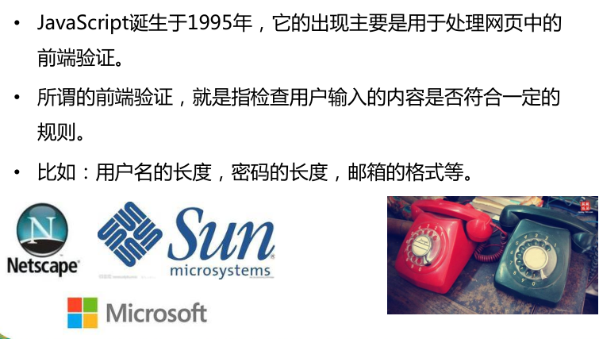

一、JavaScript概述
1 编程语言
1.1 编程语言的定义
- 编程语言就是人与计算机交流的语言。
- 编程语言要满足图灵完备性(一切可计算的问题都能计算)，所以说HTML和CSS不能算作编程语言。1.2 编程语言的分类
① 机器语言
01000100001000001010101000001000010000010000
00001000011101111011110001110000111000100000
01011100001000101010101000111000010000101010
01010101010101010111100000011101111000101010② 汇编语言
section .data ; 数据段声明
msg db "Hello, world!", 0xA ; 要输出的字符串
len equ $ - msg ; 字串长度
section .text ; 代码段声明
global _start ; 指定入口函数
_start: ; 在屏幕上显示一个字符串
mov edx, len ; 参数三：字符串长度
mov ecx, msg ; 参数二：要显示的字符串
mov ebx, 1 ; 参数一：文件描述符(stdout)
mov eax, 4 ; 系统调用号(sys_write)
int 0x80 ; 调用内核功能
; 退出程序
mov ebx, 0 ; 参数一：退出代码
mov eax, 1 ; 系统调用号(sys_exit)
int 0x80 ; 调用内核功能③ 高级语言
编译型 ： 先编译，再运行； 如 Java、C、C++ ... 运行效率更高。需要编译器。
解释型 : 边编译，边运行； 如JavaScript、PHP、Python... 开发效率更高。需要解释器。2 什么是 JavaScript
JavaScript 是一门动态的，弱类型的，解释型的，基于对象的脚本语言。
动态： 程序执行的时候才会确定数据类型。 静态： 书写代码的时候提前确定数据类型。
弱类型： 数据类型可以自动转换。 强类型： 数据类型无法自动转换。
解释型： 边编译，边运行，开发效率更高。 编译型： 边编译，边运行，开发效率更高。
脚本：一般都是可以嵌在其它编程语言当中执行。
JavaScript 的解释器（运行环境）是浏览器或Node.js。
Java 和 JavaScript 的关系： 雷锋和雷峰塔的关系。3 JavaScript 的由来
 在美国 布莱登艾奇 1995年 用了10天开发了js
JavaScript是一门动态、弱类型、解释型的脚本语言
动态语言：只有在执行的时候才能确定数据类型
弱类型：变量数据的类型不是确定的，可以随意的进行改变
解释型：相对编译型来说，编译型计算机在执行之前需要把程序进行编译，完事之后在执行， 而解释型，不需要编译，执行的时候一行一行去解释执行
脚本：一般只是要脚本语言，都代表可以嵌套在其他语言中进行执行
起初叫什么、后来怎么叫JavaScript了
刚开始叫livescript sum开发了java 借助了java的名字火了一把
把livescript改为了JavaScript
1.为什么要有JavaScript
开始能干什么
负责表单验证（仅仅是负责表单验证）
如果没有js，那么我们网页的表单验证需要通过网络传输数据去服务器进行验证
占用带宽资源严重，并且用户体验效果不好 现在能干什么
浏览器端js，页面特效(表单验证、各种特效)
手机app(ios编程语言、oc和swift; 安卓：java)(js开发混合app：一键打包到安卓、ios、windowsphone)
游戏(网页，代替flash)
后端开发(nodejs)2.javascript的组成部分
ECMAscript(ES5) 是一个标准负责JavaScript基础语法
DOM 文档对象模型（主要就是操作网页中的元素）
BOM 浏览器对象模型（就是操作浏览器的）3.js语句的特点
alert函数 以弹出框的形式输出内容
clonsole.log函数 以日志的形式在控制台输出内容
document.write函数 把内容作为网页的内容进行显示
clonsole.dir 函数 更详细日志
js语句的特点：每一行我们都会有一个分号进行结尾，分号不是必须的。4.js的三种书写位置的优缺点
内嵌式：用的比较多，一般写项目初期都会内嵌，最后变为外链
外链式：里面不能写其他代码，外链以后几乎全是外链
行内式(内联)：局限性比较大，只能对事件进行书写js，问题也很大，做不到结构和行为分离1.可以编写到标签的指定属性中 <button onclick="alert('hello');">我是按钮</button> <a href="javascript:alert('aaa');">超链接</a> 2.可以编写到script标签中 <script type="text/javascript"> //编写js代码 </script> 3.可以将代码编写到外部的js文件中，然后通过标签将其引入 <script type="text/javascript" src="文件路径"></script>>- JS严格区分大小写 >- JS中每条语句以分号(;)结尾 >- JS中会自动忽略多个空格和换行，所以我们可以利用空格和换行对代码进行格式化。
二、 变量及作用
什么是变量，什么是常量
变量就是可以变化的量
常量就是不可以改变的量字面量：都是一些不可改变的值
比如：1.2.4.5
字面量都是可以直接使用，但是我们一般不会直接使用字面量
变量：变量可以用来保存字面量，而且变量的值可以任意改变的
变量更加方便我们使用，所以在开发中都是通过变量去保存一个字面量，很少使用字面量
js中的变量并不直接存储值，而是存储值的内存地址，当我们访问变量时，是通过内存地址找到值
在js中所有基本类型都是不可变类型，值一旦创建，就不可修改
为什么要有变量
我们对数据进行运算，然后进行输出，这个数据就需要一个东西去保存，就是
我们所说的变量，本质上是一个容器怎么去玩
1.定义变量，定义后使用，变量的初始化（var和不写的区别） 变量的本质
定义变量使用var关键字，先定义后使用，定义好了可以给变量赋值
如果定义变量不使用var，那么变量必须要赋值，不赋值就报错
建议，我们在使用的时候，都带上var去定义变量 2.变量的命名规范（大驼峰，小驼峰，下划线）
变量的名字由：数组、字母、下划线、以及$组成
不能以数字开头，不能和关键字以及保留字同名 不能是ES中关键字或保留字
变量名我们一般要见名知意
大驼峰：变量名所有的单词首字母大写 var ClassNumber
小驼峰：变量名第一个单词首字母小写，其它的大写 var classNumber 前端人员最常用的是这个，只有特定情况用大驼峰；
下划线：单词和单词之间用下划线连接 var class_number 3.关键字和保留字
三、 数据类型
1、数据类型（存储的数据的类型）
基本数据类型和对象(复杂)数据类型
基本数据类型（值类型）
ES5中有五种 ：
- String 字符串
- Number 数值
- Boolean 布尔值
- Null 空值
- Undefined 未定义
- Object 对象
这5种之外的类型都称为Object，所以总的来看JavaScript中共有六种数据类型。
2、基本使用场景
数值类型 整数和浮点数(小数)
字符串 单引号或者双引号包含 空字符串 和 空白字符串
布尔 true或者false
undefined 定义的变量没有赋值
null 定义的变量赋值为null(一般是对对象进行初始化使用或者是删除一个对象的时候用到)
Null类型也是只有一个值：null(空)
通常当一个对象（Object类型）不再使用时，可以赋值为null 让垃圾回收机制回收
Null和Undefined的关系：
* Null 类型的值只有一个，就是null 空值
* null这个值专门用来表示一个为空的对象
* 使用typeof检查null值时，会返回object
* Undefined类型的值只有一个，就是undefined 表示未定义
* 当声明一个变量，但是不给变量赋值时，他的值就是undefined
undefined值实际上是由null值衍生出来的，所以如果比较undefined和null是否相等，会返回true
但是转化成数字时，undefined为NaN，null为0
3、数据类型的判断
使用typeof操作符可以用来检查一个变量的数据类型。
语法： typeof 变量四、 运算符和表达式
什么是运算符 什么是表达式
运算符：参与运算的符号
表达式：由变量或常量和运算符组成的式子 表达式是有值的
1、算术 算术表达式
+ 对两个值进行加法运算并返回结果
- 对两个值进行减法运算并返回结果
* 对两个值进行乘法运算并返回结果
/ 对两个值进行除法运算并返回结果
% 对两个值进行取余运算并返回结果
- 除了加法以外，对非Number类型的值进行运算时，都会先转换为Number然后在做运算。
- 而做加法运算时，如果是两个字符串进行相加，则会做拼串操作，将两个字符连接为一个字符串。
- 任何值和字符串做加法，都会先转换为字符串，然后再拼串
++ -- 作用及注意事项
- 自增
- 自增可以使变量在原值的基础上自增1
- 自增使用 ++
- 自增可以使用 前++（++a）后++(a++)
- 无论是++a 还是 a++都会立即使原变量自增1
不同的是++a和a++的值是不同的，
++a先让a值的+1，后把a的值赋值给表达式 的值等于原变量自增后的值(新值) （自增后的值）
a++是先赋值(先把a的值赋值给表达式) 的值是变量的原值（自增前的值）
- 自减
- 自减可以使变量在原值的基础上自减1
- 自减使用 --
- 自减可以使用 前--（--a）后--(a--)
- 无论是--a 还是 a--都会立即使原变量自减1
不同的是--a和a--的值是不同的，
--a的值是变量的新值（自减后的值）
a--的值是变量的原值（自减前的值）
2、赋值 把=右边的值 赋值给左边的值 =左边一定是变量
var a = 1
= += -= *= /= %=
a+=b 相当于 a = a +b;
3、比较(条件运算符)
> < >= <= == != ===(全等于) !==(不全等于)
主要用来比较两个值之间的关系，如果关系成立则返回true，关系不成立则返回false。
- 如果比较的两个值是非数值，会将其转换为Number然后再比较。
- 如果比较的两个值都是字符串，此时会比较字符串的Unicode编码，而不会转换为Number。
==
- 相等，判断左右两个值是否相等，如果相等返回true，如果不等返回false
- 相等会自动对两个值进行类型转换，如果对不同的类型进行比较，会将其转换为相同的类型然后再比较，转换后相等它也会返回true
!=
- 不等，判断左右两个值是否不等，如果不等则返回true，如果相等则返回false
- 不等也会做自动的类型转换。
===
- 全等，判断左右两个值是否全等，它和相等类似，只不过它不会进行自动的类型转换，如果两个值的类型不同，则直接返回false
!==
- 不全等，和不等类似，但是它不会进行自动的类型转换，如果两个值的类型不同，它会直接返回true
null和undefined使用==判断时是相等的
== ：判断的是值是否一致
===：判断的是类型和值是否都一致，都一致才会为true
4、逻辑运算符 用在多个条件表达式的连接
&&(并且) ||(或者) !
&&一假则假 两个值只要有一个fasle，就返回fasle 两个值都为true，才会返回true
|| 一真则真 两个值只要有一个true，就返回true 两个值都为false 才返回false
！非真即假 非假即真
&& 先判断&&之前是否为为真，如果为真 ，那么取后边的值，赋值给逻辑表达式 前面如果是假，那么取前面的值赋值给逻辑表达式
|| 先判断||之前是否为为真，如果为真 ，那么取前面的值，赋值给逻辑表达式 前面前面的值为假，那么取后面的值赋值给逻辑表达式5、三目运算符(也叫三元运算符)
var b = a > 0 ? 10 : 100;
语法：条件表达式?语句1:语句2;
先执行第一个表达式(也就是?前面的表达式)，看看这个表达式是否为真，
如果判断结果为true，则执行语句1，并返回执行结果
如果判断结果为false，则执行语句2，并返回执行结果五、数据类型转换
1、数据类型强制转换
Number()
使用Number()函数
通常情况下是用来转字符串的
强制将一个其它类型数据转化为数字类型，转不了就是NaN
字符串 ---> 数字
- 如果是纯数字的字符串，则直接转换为数字
- 如果字符串是一个非法的数字，则转换为NaN
- 如果是一个空串或纯空格的字符串，则转换为0
布尔值 --> 数字 转化数字的时候，除了0是false,其余都是true
- true转换为1
- false转换为0
null(空值) --> 数字
- null转换为0
未定义(undefined) --> 数字
- undefined 转换为NaN
NaN，即非数值（Not a Number）是一个特殊的数值，JS中当对数值进行计算时没有结果返回，则返回NaN。使用Typeof检查NaN会返回Number
String()函数强制将一个其它类型数据转化为字符串类型
转化字符串没有什么特殊，只要给我东西，那么就会把这个东西原样变为字符串输出；
将其他数值转换为字符串有三种方式：调用被转换数据的toString()方法、调用String()函数、拼串。
Boolean() 强制将一个其它类型数据转化为boolean类型
使用Boolean()函数
字符串 --> 布尔
- 转化字符串的时候，除了空字符串是false,其余都是true
Number(数值) --> 布尔
- 除了0和NaN是fasle其余的全是true
null、undefined ---> 布尔
- 转化undefined和null都是false;
对象 ---> 布尔
- 都是true
2、数据类型隐式转换
各种类型在适当的场合会发生隐式转换
主要是运算过程和判断过程中
3、数据类型手动转换（其实就是在字符串当中提取数字 强制类型转换）
- 调用parseInt()或parseFloat()
- 这两个函数专门用来将一个字符串转换为数字的
- parseInt() 从字符串中提取整数 字符串必须以数字开头，转换为Number,否则NaN
- parseFloat() 从字符串中提取浮点数(小数)字符串必须以数字开头，转换为Number,否则NaN六、语句结构分类
顺序结构 分支结构 循环结构
通过流程控制语句可以改变程序执行的顺序，或者反复的执行某一段的程序。
1、if判断
单分支
if(一般都是一个表达式，但是最终只要有值就行,并且这个值最终会转换为boolean){
代码块
}
- 执行流程：
if语句执行时，会先对条件表达式进行求值判断，
如果值为true，则执行if后的语句
如果值为false，则不执行
双分支
if(一般都是一个表达式，但是最终只要有值就行，并且这个值最终会转化为boolean){
代码块；
}else{
代码块；
}
- 执行流程：
if...else语句执行时，会对条件表达式进行求值判断，
如果值为true，则执行if后的语句
如果值为false，则执行else后的语句
多分支
多分支是把一件事分成多种情况去考虑，每一种情况都要去处理；
if(){
}else if(){
}else if(){
}else{
}
- 执行流程
- if...else if...else语句执行时，会自上至下依次对条件表达式进行求值判断，
如果判断结果为true，则执行当前if后的语句，执行完成后语句结束。
如果判断结果为false，则继续向下判断，直到找到为true的为止。
如果所有的条件表达式都是false，则执行else后的语句
2、switch....case分支语句（其实就是if多分支的变种，为了代码可读性更好一些）;
- switch语句
- 语法:
switch(条件表达式){
case 表达式:
语句...
break;
case 表达式:
语句...
break;
case 表达式:
语句...
break;
default:
语句...
break;
}
- 执行流程：
- switch...case...语句在执行时，会依次将case后的表达式的值和switch后的表达式的值进行全等比较，
如果比较结果为false，则继续向下比较。如果比较结果为true，则从当前case处开始向下执行代码。
如果所有的case判断结果都为false，则从default处开始执行代码。
3、 for循环
1. 循环的意义（为什么要循环）
- 语法：
for(①初始化表达式 ; ②条件表达式 ; ④更新表达式){
③语句...
}
- 执行流程：
首先执行①初始化表达式，初始化一个变量，
然后对②条件表达式进行求值判断，如果为false则终止循环
如果判断结果为true，则执行③循环体
循环体执行完毕，执行④更新表达式，对变量进行更新。
更新表达式执行完毕重复②
一定注意： for循环初始化表达式只是在第一次循环的时候执行，后面的循环全部都不执行了；
for循环当中的循环变量i 有两个作用， 1、控制着循环的次数 2、变量同时也是有值的；
4、 while循环
- while循环
- 语法：
while(条件表达式){
语句...
i++
}
- 执行流程：
while语句在执行时，会先对条件表达式进行求值判断，
如果判断结果为false，则终止循环
如果判断结果为true，则执行循环体
循环体执行完毕，继续对条件表达式进行求值判断，依此类推
什么时候用for,什么时候用while
//for循环一般有明显的循环次数，这时候用for循环比较容易；
//while循环一般没有明显的次数，用它最合适；
break和continue关键字
continue;//结束当前循环（continue以下的代码不会执行了，从下一次开始继续）
break;//在循环当中，跳出离它最近的那一层循环。如果是多层循环要注意；七、 数组
数组概念，作用，定义
数组： 是一个具有相同类型或者不同类型的数据有序集合；
为什么： 因为我们想要一次性拿到很多个数据，如果没有数组，就得定义很多的变量去存储
- 数组也是一个对象，是一个用来存储数据的对象，和Object类似，但是它的存储效率比普通对象要高
- 数组中保存的内容我们称为元素
- 数组使用索引（index）来操作元素
- 索引指由0开始的整数
数组length， 索引（下标）
只要定义一个数组，数组里面就会有一个默认的属性叫length,它代表着数组的长度
索引也被称作下标，通常情况下只要我们知道了索引，就可以拿到这个数组对应的这个索引的值
- 数组的操作：
- 创建数组
通过构造函数定义数组
- var arr = new Array();
通过字面量定义数组
- var arr = [];
- 向数组中添加元素
- 语法；
数组对象[索引] = 值;
arr[0] = 123;
arr[1] = "hello";
- 创建数组时直接添加元素
- 语法：
var arr = [元素1,元素2....元素N];
- 例子：
var arr = [123,"hello",true,null];
- 获取和修改数组的长度
- 使用length属性来操作数组的长度
- 获取长度：
数组.length
- length获取到的是数组的最大索引+1
- 对于连续的数组，length获取到的就是数组中元素的个数
- 修改数组的长度
数组.length = 新长度
- 如果修改后的length大于原长度，则多出的部分会空出来
- 如果修改后的length小于原长度，则原数组中多出的元素会被删除
- 向数组的最后添加元素
数组[数组.length] = 值;
- 数组的方法
- push()
- 用来向数组的末尾添加一个或多个元素，并返回数组新的长度
- 语法：数组.push(元素1,元素2,元素N)
- pop()
- 用来删除数组的最后一个元素，并返回被删除的元素
- unshift()
- 向数组的前边添加一个或多个元素，并返回数组的新的长度
- shift()
- 删除数组的前边的一个元素，并返回被删除的元素
- slice()
- 可以从一个数组中截取指定的元素
- 该方法不会影响原数组，而是将截取到的内容封装为一个新的数组并返回
- 参数：
1.截取开始位置的索引（包括开始位置）
2.截取结束位置的索引（不包括结束位置）
- 第二个参数可以省略不写，如果不写则一直截取到最后
- 参数可以传递一个负值，如果是负值，则从后往前数
- splice()
- 可以用来删除数组中指定元素，并使用新的元素替换
该方法会将删除的元素封装到新数组中返回
这是一个万能的方法，可以增、可以删、可以改都是在原数组基础上进行的
- 参数：
1.删除开始位置的索引
2.删除的个数
3.三个以后，都是替换的元素，这些元素将会插入到开始位置索引的前边
- 遍历数组
- 遍历数组就是将数组中元素都获取到
- 一般情况我们都是使用for循环来遍历数组：
for(var i=0 ; i<数组.length ; i++){
//数组[i]
}
- 使用forEach()方法来遍历数组（不兼容IE8）
数组.forEach(function(value , index , obj){
});
forEach()方法需要一个回调函数作为参数，
数组中有几个元素，回调函数就会被调用几次，
每次调用时，都会将遍历到的信息以实参的形式传递进来，
我们可以定义形参来获取这些信息。
value:正在遍历的元素
index:正在遍历元素的索引
obj:被遍历对象
二、二维数组
var arr = [[1,2],[3,4],[5,6]]; //二维数组
console.log(arr[0][0]);
二维数组遍历
for(var i=0;i<arr1.length;i++){
for(var j = 0;j<arr[i].length;j++){
console.log(arr[i][j])
}
}八、 函数
1、 函数基本使用
概念，定义（表达式，字面量），作用
什么是函数：
具有某种特定功能的代码块
为什么要有函数
1、函数可以解决代码复用问题
2、函数可以把整个项目模块化
函数定义（字面量定义和表达式定义 先定义后使用）
// 字面量定义 常用
function printTriangle() {
// 函数体 也就是你的功能代码
}
// 函数表达式定义
var printTriangle = function() {
// 函数体 也就是你的功能代码
}
- 函数也是一个对象，也具有普通对象的功能
- 函数中可以封装一些代码，在需要的时候可以去调用函数来执行这些代码
- 使用typeof检查一个函数时会返回function
函数定义或者调用都要考虑函数的三要素：功能 参数 返回值；
功能：一般说的就是函数能做什么 通常情况下函数名就代表着函数的功能
侧面告诉我们函数的名字要见名思意；
参数：函数的小括号当中，写的是参数，函数定义的参数，我们被称作形参（形式参数）;
函数调用的时候,小括号里面也写的是参数,这些参数我们称作实参(实际参数);
函数调用的实参本质上是在给函数定义的形参进行赋值(把实参的值赋值给形参，通常叫传参)；
注意：形参写出来就相当于在函数内部 var了一个变量
function printLove(a) {
// var a ;
for (i = 0; i < a; i++) {
console.log("我爱你");
}
}
printLove(100);
函数传参：分为基本数据类型和对象数据类型
传基本类型和对象类型不一样：基本数据类型传进去后，函数外和函数内操作的不是一个值。所以当基本数据类型的时候，函数内部运算后的结果我们需要返回。
但是如果传的是对象类型(数组),那么函数内部和外部操作的是同一个数据(数组)，因此函数内部对数组所有的操作相当于操作外部的一样。所以运算完之后不需要返回，外部一样看到发生了变化
返回值：每一个函数都会有返回值，有的函数返回值比较明确，写了return,但是有的函数没有写return，并不是代表这个函数没有返回值，而是省略了return，实际上返回值是undefined
函数调用也被叫做函数调用表达式；既然函数调用是一个表达式，那么函数调用就是有值的，函数返回值就是函数调用表达式的值；
2、 函数的分类
1) 无参无返回值
2) 有参无返回值
3) 无参有返回值
4) 有参有返回值
<script>
// 无参无返回值
function prinLove() {
for (var i = 0; i < 100; i++) {
console.log("我爱你");
}
}
// 有参无返回值
function prinLove(a) {
// 形参写出来就相当于在函数内部var了一个变量
for (var i = 0; i < a; i++) {
console.log("我爱你");
}
}
prinLove(200);
// 无参有返回值
function prinLove() {
for (var i = 0; i < 100; i++) {
console.log("我爱你");
}
return 100;
}
// 有参有返回值
function prinLove(a) {
for (var i = 0; i < a; i++) {
console.log("我爱你");
}
return 100;
}
function add(a, b) {
var c = a + b;
return c;
}
var result = add(10, 20);
console.log(result);
</script>
形参和实参
- 形参：形式参数
- 定义函数时，可以在()中定义一个或多个形参，形参之间使用,隔开
定义形参就相当于在函数内声明了对应的变量但是并不赋值，
形参会在调用时才赋值。
- 实参：实际参数
- 调用函数时，可以在()传递实参，传递的实参会赋值给对应的形参,
调用函数时JS解析器不会检查实参的类型和个数，可以传递任意数据类型的值。
如果实参的数量大于形参，多余实参将不会赋值，
如果实参的数量小于形参，则没有对应实参的形参将会赋值undefined
3、 作用域
1) 作用域概念，定义，作用（函数的执行过程，程序执行的过程）
作用域说的是变量起作用的区域或者范围；
作用域的作用：变量在各自的作用域当中起作用；内部可以用外部的东西，外部不能用内部的东西，学了闭包才能外部拿到内部的东西
2) 局部变量和全局变量
局部变量：在局部作用域当中的变量（函数当中定义的变量）
全局变量：在全局作用域当中的变量（函数外部定义的变量）
局部变量和全局变量 没有任何关系
全局变量在哪都可以使用
而局部变量只能在自己局部作用域当中使用；
3) 作用域分类(全局，局部，块级)，
在es5当中没有块级作用域，只有全局和局部
全局作用域和局部作用域当中定义变量的坑：
当我们定义变量的时候，都会加一个var，但是也有不加var的情况：
在函数中，不使用var声明的变量都会成为全局变量,声明了var就是局部变量
定义形参就相当于在函数作用域中声明了变量
如果是在全局：没有定义过的变量，不加var，那么必须给这个变量赋值，而且相当于给这个变量加var，是一个地地道道的全局变量
如果是在局部：没有定义过的变量（如果没有参数，也没有加var），定义这个变量不加var，首先要看外部全局是否定义过这个变量
如果全局定义过，那么这个变量就不是在初始化，而是在操作全局变量。如果没有定义过，相当于在定义全局变量；
4）作用域链：
说的是变量在查找的过程，变量在查找的时候，首先从自己的作用域当中去查找，如果没有，往上一级作用域当中去查找
一直查直到函数外部的全局作用域，只要找到，立即停止往上找，直接输出。如果没有找到会一直往上查，如果最后查到函数外部的全局都没有，就报错；
5)程序执行过程
程序执行开始：首先肯定是创建的全局环境，然后才是局部环境，并且这些环境都是在栈里面进行管理的。
创建完全局环境之后，会把程序当中所有的全局变量收集起来并且进行执行开辟空间
接着函数调用的时候，才会创建函数环境，并且收集所有的局部变量，执行开辟空间
当函数执行完成以后，也就是函数返回值之后，代表函数执行完成，此时函数的环境会立马从栈中弹出，代表函数环境被销毁，也就是释放内存
当整个程序执行结束以后，全局环境最后才会弹出栈，也就是销毁了全局环境，释放全局环境占用的内存。
4、 预解析 预解释 声明提升 变量提升
a) 预解析演示
变量 带var和不带var: 预解析只会解析带var的变量，如果不带var，不进行预解析；
console.log(a);
var a = 10;
会变成下面这样
var a ;
console.log(a);
a =10
函数 字面量和表达式函数关系
function f1(){} 如果是这种写法；函数整体会提升
var f1 = function(){} 如果是这种写法；只会提升var f1; 不会提升函数的表达式；
b) 预解析效果
全局
全局当中所有带var的变量 以及使用字面量定的函数 都要提升到全局的最上方 不提升值
函数
函数当中所有带var的变量，以及使用字面量定的函数 都要提升到这个函数的局部环境的最上方
5、 IIFE，函数作为参数 & arguments
IIFE:意为立即调用的函数表达式（匿名函数自调用）
定义的时候就一起调用了，不会发生预解析
匿名函数自调用只能执行一次，通常用来做一些项目的初始化
匿名函数通常可以做：
1、封装代码实现，不把代码暴露出去
2、可以防止外部的命名空间被污染
(function() {
})();
作用？
函数是可以作为参数传递的（一般都是回调函数）
回调函数定义：如果一个函数被当作参数传给另外一个函数，那么这个函数就被称作回调函数，虽然概念是这么定义的，但是真正的回调函数还要符合下面
几个特点；
如果不符合，我们不能称作是真正回调；
回调函数：函数是我定义的 回调函数我传到另外一个函数中我没有调用 最终执行了
事件 本来就是一个方法或者函数 写回调函数
定时器
ajax
生命周期回调函数
//把函数作为参数传到另外一个函数
function f1(fn) {
console.log("我爱你");
var a = 10;
var b = 20;
console.log(fn(a, b));
}
function add(a, b) {
return a + b;
}
f1(add);
Arguments 函数实参伪数组
在每个函数当中，都会有一个实参的伪数组，这个东西是专门用来存储函数调用传过来的实参，即使你的函数定义当中没有形参，这个arguments当中也会存储你的实参；因此在js当中可以这么说，形参可有可无；
通常情况下我们可以根据这个arguments伪数组的长度去让一个函数表现出不同的功能，函数定义当中肯定是一个if else判断九、Object实例对象
一 对象（一般外面说的对象是object的实例对象：万能的 通用的 可以表示任何事物的）
不能说你随便给我创建一个对象里面随便写什么，一会狗一会人的，这个对象很不矜持。所以需要把对象更细化一下(使用构造函数创建特定实例对象)
- 对象是JS中的引用数据类型
- 对象是一种复合数据类型，在对象中可以保存多个不同数据类型的属性
- 使用typeof检查一个对象时，会返回object
基本数据类型和引用数据类型
- 基本数据类型
String Number Boolean Null Undefined
以上这五种类型属于基本数据类型，以后我们看到的值，只要不是上边的五种，全都是对象
- 引用数据类型
Object
- 基本数据类型的数据，变量是直接保存的它的值。
变量与变量之间是互相独立的，修改一个变量不会影响其他的变量。
- 引用数据类型的数据，变量是保存的对象的引用（内存地址）。
如果多个变量指向的是同一个对象，此时修改一个变量的属性，会影响其他的变量。
- 比较两个变量时，对于基本数据类型，比较的就是值，
对于引用数据类型比较的是地址，地址相同才相同
1. 对象的概念
在js当中，可以说一切皆对象；
对象的概念： 无序的名值对的集合（键值对的集合）；
2. 除了字符串、数字、true、false、null和undefined之外，JS中的值都是对象。
如果存储一个简单的数据（一个数字，一个字符串） 直接var a = 10;
如果存储一堆的数据 此时我们想到数组 数组就是专门用来存储多个数据用的 var arr = [];
如果我们想要执行一段代码，或者让这段代码有功能，此时我们需要函数 function f1(){};
如果我想描述一个复杂的事物，比如说一个人，一台电脑（需要用到多个属性或者方法才能描述清楚），此时就要用到对象；
3. 对象的创建方法
a) 字面量创建 常用
var person = {
name:" 孙悟空",
age:18
};
b) 构造函数定义
var person = new Object({name:'杨幂',age:33});
var person = new Object();
person.name = " 孙悟空";
person.age = 18; 4. 对象的操作及遍历（增删改查）
var obj = {}//相当于new object
//增
obj.name = "小黄";
obj.age = 18;
console.log(obj);
obj["color"] = "yellow"; //和obj.color完全等价
//如果用的是[]的方式，那么[]当中加引号是在往对象当中添加名或者键，如果不加[]就会被当做变量处理，没有定义这个变量就会报错
var cry = "call";
obj[cry] = function() {
console.log("哈哈");
}
console.log(obj);
// 改
var a = "category";
obj.color = "black"; 有则更改无则增加
obj["name"] = "小黑";
obj[a] = "黑毛";
console.log(obj);
// 查
console.log(obj.name);
console.log(obj["color"]);
// 删
// delete obj.category;
// console.log(obj);
遍历 for in循环进行遍历对象 遍历数组用for
var obj = {
name: "car",
category: "劳斯莱斯",
color: "red",
money: 1000000,
//把属于某个对象的函数称为方法
run: function() {
console.log("跑的很快");
}
}
for (var key in obj) {
console.log(key, obj[key]);
//如果在遍历对象的时候，取值只能使用[]的方式，因为key是一个变量
//如果写成obj.key拿到的是undefined，key被认为是对象里面的属性
//obj[key] key被解析为变量，使用变量的值进行替换。
}
二: 构造函数创建特定实例对象
你想要创造人，就通过人去实例化，如果要创建猫就通过猫去实例化，而不是让人和狗通过object去实例化。
1. 构造函数的基本概念，使用，作用
构造函数：本质上也是一个函数，只不过通常我们把构造函数的名字写成大驼峰；
在js当中，没有类的概念（ES5版本）,构造函数可以理解为类；
构造函数用法和普通的函数用法是一样的，直接可以调用，只不过它比普通函数多了一种用法 new
一个构造函数可以对应很多对象，一个对象只有一个构造函数
创建两种构造函数 每个构造函数实例化2个对象
function Singer(name, gender, age) {
//给对象设置属性
this.name = name;
this.age = age;
this.gender = gender;
//给对象设置方法
this.Sing = function() {
console.log("我什么都能唱" + name);
}
}
var singer1 = new Singer("邓紫棋", "famale", 22);
singer1.Sing();
console.log(singer1.name);
console.log(singer1["age"])
var singer2 = new Singer("张国荣", "male", 41);
singer2.Sing();
console.log(singer2.name);
console.log(singer2["age"])
function BlueCat(name, age, gender) {
this.name = name;
this.age = age;
this.gender = gender;
this.run = function() {
console.log("跑的飞起呀");
}
}
var cat1 = new BlueCat("tom", 2, "male");
cat1.run();
console.log(cat1.name);
console.log(cat1.age);
var cat2 = new BlueCat("jerry", 3, "male");
cat1.run();
console.log(cat2.name);
console.log(cat2.age);
2. 对this的讲解
this其实通常情况下载任何函数当中都会有this这个关键字
this本质其实是一个对象，代表着调用和这个函数或组方法的对象(执行者)
不同场合this的指向不同
在函数当中函数也可以叫做window对象的方法,在全局作用域中this代表window
在事件当中，回调函数当中的this，代表的是事件对象
在对象的方法当中，this代表的是这个对象
使用call和apply调用时，this是指定的那个对象
在构造函数当中，代表的是实例化出来的对象
var a = 10;
function add(a, b) {
console.log(this);
return a + b;
}
window.add(10, 20);
//构造函数通常是用来实例化对象用的，所以不会当作普通函数执行
var per1 = new Person("zs", "23", "male");
console.log(per1);
、
window对象简介
程序开始的时候，你一打开浏览器，浏览器当中所包含的一切全部都在window当中，浏览器窗口对象，代码执行的时候所有的一切都是包含在窗口对象下的。
3、new关键字实例化对象的
1、开辟内存空间
2、this指向该内存
3、执行函数
4、生成对象实例4、 原型对象(prototype)和原型链
原型对象
什么是原型对象
如果不用原型对象就会产生大量重复对象，很浪费空间所以就需要原型对象来做资源共享节省空间
- 每创建一个函数以后，解析器都会默认在函数对象中添加一个prototype
prototype属性指向的是一个对象，这个对象我们称为原型对象。
原型对象默认是Object的实例对象
- 当函数作为构造函数使用，它所创建的对象中都会有一个隐含的属性执行该原型对象。
这个隐含的属性可以通过对象.__proto__来访问。
constructor：构造器 在指向自己的构造函数
prototype：指向原型对象 原型对象中会有constructor
_proto_ ：隐士原型对象 也会指向原型对象
function MyClass() {
}
let mc = new MyClass();
// MyClass.prototype 显示原型
// mc.__proto__ 隐士原型
- 原型对象就相当于一个公共的区域，凡是通过同一个构造函数创建的对象他们通常都可以访问到相同的原型对象。
我们可以将对象中共有的属性和方法统一添加到原型对象中，
这样我们只需要添加一次，就可以使所有的对象都可以使用。
- 当我们去访问对象的一个属性或调用对象的一个方法时，它会先自身中寻找，
如果在自身中找到了，则直接使用。
如果没有找到，则去原型对象中寻找，如果找到了则使用，
如果没有找到，则去原型的原型中寻找，依此类推。直到找到Object的原型为止，Object的原型的原型为null，如果依然没有找到则返回undefined
- hasOwnProperty()
- 这个方法可以用来检查对象自身中是否含有某个属性
- 语法：对象.hasOwnProperty("属性名")
function BlueCat(name, age, gender) {
this.name = name;
this.age = age;
this.gender = gender;
}
// 写到原型对象中
BlueCat.prototype.run = function() {
console.log("跑的飞起呀");
}
var cat1 = new BlueCat("tom", 2, "male");
console.log(cat1);
var cat2 = new BlueCat("jerry", 3, "male");
console.log(cat2);
console.log(BlueCat);
原型对象的作用
资源共享、节省空间
就是把重复的东西，并且不要每个人都要有一份给单独抽离出来，放到一个公共空间，你用就去哪里找
原型链
对象在查找属性或者方法的过程
对象在调用方法(或者属性)的时候，首先会从自己对象的空间去找，如果找到，就直接用
如果没有找到，然后去自己的原型对象空间去找（自己的构造函数的原型对象），如果找到
就用，如果没有找到，然后在去自己的原型对象的原型对象空间去找（自己的构造函数的原型对象的构造函数的原型对象中去找），如果找到就用，如果找不到继续向上，直接找到object的原型对象为止，找到就用，找不到报错。
/*
*
* 每个函数对象中都有一个属性叫做prototype
* 该属性指向的是一个对象，这个对象就是原型对象
* 如果函数作为普通函数调用，则原型对象(prototype)没有任何作用
* 如果函数作为构造函数调用，那么通过该构造函数所创建的对象中，
* 都会有一个隐含的属性(__proto__)指向函数的原型对象(prototype)
*
* 也就是说，该类的所有实例中都会有一个隐含属性指向构造函数的prototype
* 原型对象，就相当于一个公共的区域可以被所有的该类实例访问
* 可以将一些实例共有的属性或方法存储在原型对象中，
* 这样只需要设置一次即可让所有对象都可访问到该属性
*
* 当我们访问一个对象中的属性时，js会先在对象本身中寻找，如果找到了则直接使用
* 如果没有找到则去对象的原型(__proto__)寻找
* 找到则使用，如果没有找到则去原型的原型中寻找，
* 找到了则使用，如果没有找到以此类推..
* 知道找到object的原型，如果依然没有，则返回undefined，不会报错
* 这个搜索的过程称为原型链
* */
5、 - call()
- apply()
-这两个方法可以让一个对象使用另外一个对象的方法（也就是可以改变一个函数的执行对象），让一个实例对象去调用window的方法(也就是我们所说的函数)
- 这两个方法都是函数对象的方法需要通过函数对象来调用
- 通过两个方法可以直接调用函数，并且可以通过第一个实参来指定函数中this
- 不同的是call是直接传递函数的实参而apply需要将实参封装到一个数组中传递
function BlueCat(name, age, gender) {
this.name = name;
this.age = age;
this.gender = gender;
}
Object.prototype.run = function() {
console.log("跑的飞起呀");
}
var cat1 = new BlueCat("tom", 2, "male");
var cat2 = new BlueCat("jerry", 3, "male");
function add(a, b) {
return a + b;
}
// window.add(10, 20);
//把add的执行window改为了cat1，让cat1可以有求和的方法
//apply的用法 两个参数：第一个参数代表改变的执行者（对象）
//第二个参数是函数所需要的参数，这个参数必须是数组形式
//语法：
//函数或者方法.apply(对象.[函数的参数])
//函数或者方法.call(对象,函数的参数1,函数的参数2)
var result = add.apply(cat1, [10, 20]);
console.log(result);
var result = add.call(cat1, 10, 20);
console.log(result);
6. 对象是哪个构造函数的实例判断 instanceof
typeof 应用的场景
这个在判断基本数据类型当中的数字、字符串、布尔、undefined、函数的时候可以派上用场，但是当我们使用typeof判断数组和对象以及null的时候区分不出来，此时我们需要知道的是这个数据是什么对象就无法解决了。
instanceof 应用的场景
主要是判断这个对象是否是构造函数的实例
可以区分判断是一个数组对象还是一个其他构造函数的实例对象
通过判断这个对象是哪个构造函数的实例对象，可以区分出来是数组还是其他对象三 值类型，引用数据类型，堆， 栈
1. 值类型和引用数据类型的概念（）
基本数据类型 number string boolean undefined null
引用数据类型 就是对象数据类型 object 数组对象 函数 内置工具对象
2. 堆和栈的概念
栈 数据结构 （栈）先进后出 桶 栈结构内存一般比较小，计算机自动分配内存，存取速度比较快
堆 数据结构（链表） 随意进出 堆结构内存一般比较大，底层是需要程序员自己分配（js做了封装，会自动分配）堆里面一般存储的都是一些比较复杂的占空间比较大的数据
队列 数据结构（队列） 先进先出 管道
堆和栈是内存的存数据结构，内存被开辟使用，就一定会被计算机回收（释放内存）；
3. 值类型和引用数据类型与堆栈的关系（堆空间释放）；
堆空间的释放是靠垃圾回收机制进行的
当程序函数或者整个程序执行完成后，栈里面所有的东西都被释放销毁，堆当中的数据可能还在，只是没有任何的变量指向（引用）
那么堆当中的数据就会变成垃圾对象。回收机制会在适当的时候将垃圾对象清理回收；
如果我们在程序当中需要去删除对象，那么就将这个对象的变量赋值为null，代表这个对象引用被改变，这个对象也就成了垃圾对象
其实删除对象就是让堆当中的对象数据成为垃圾对象；
四 内置对象JSON
1. 什么是json,json作用
JSON是js当中的一个内置对象，里面封装了对json格式数据的操作方法；
json是一种数据格式，是前后端目前数据交互的主要格式（xml）
json通常情况下说的是字符串也叫json串
在前端json串的格式就是对象或者对象的数组，只不过要把这些数据转化成字符串形式；
2. JSON对象的方法: parse(json转换为对象)， stringify（对象转字符串）
// 对象
var dataTest = {
name: "初见",
age: 18
}
// 对象数组
var dataTestArr = [{
name: "初见2",
age: 19
}, {
name: "初见3",
age: 20
}]
// 把对象json化 也就是字符串化 前端往后端传输数据，必须先把数据封装为对象
然后在转换为json传，是为把前端json对象或者是对象数组转换为json字符串
var dataStr = JSON.stringify(dataTest);
var dataStr = JSON.stringify(dataTestArr);
// json转成对象 后端传过来的json数据我要转换为前端的对象或者对象数组进行处理
var data = JSON.parse(dataStr);
五 Math工具对象
- Math属于一个工具类，它不需要我们创建对象，它里边封装了属性运算相关的常量和方法
我们可以直接使用它来进行数学运算相关的操作
- 方法：
Math.PI
- 常量，圆周率
Math.abs()
- 绝对值运算
Math.ceil()
- 向上取整
Math.floor()
- 向下取整
Math.round()
- 四舍五入取整
Math.random()
- 生成一个0-1之间的随机数
- 生成一个x-y之间的随机数
Math.round(Math.random()*(y-x)+x);
Math.pow(x,y)
- 求x的y次幂
Math.sqrt()
- 对一个数进行开方
Math.max()
- 求多个数中最大值
Math.min()
- 求多个数中的最小值
六 Date日期对象
1. 日期的对象，在JS中通过Date对象来表示一个时间
- 创建对象
创建一个当前的时间对象
var d = new Date();
创建一个指定的时间对象
var d = new Date("月/日/年 时:分:秒");
- 方法：
getDate()
- 当前日期对象是几日（1-31）
getDay()
- 返回当前日期对象时周几（0-6）
- 0 周日
- 1 周一
getMonth()
- 返回当前日期对象的月份（0-11）
- 0 一月 1 二月 。。。
getFullYear() 从 Date 对象以四位数字返回年份。
getHours() 返回 Date 对象的小时 (0 ~ 23)。
getMinutes() 返回 Date 对象的分钟 (0 ~ 59)。
getSeconds() 返回 Date 对象的秒数 (0 ~ 59)。
getMilliseconds() 返回 Date 对象的毫秒(0 ~ 999)。
getTime()
- 返回当前日期对象的时间戳
- 时间戳，指的是从1970年月1日 0时0分0秒，到现在时间的毫秒数
计算机底层保存时间都是以时间戳的形式保存的。
Date.now()
- 可以获取当前代码执行时的时间戳
七、包装对象
基本数据类型也可以使用.调用方法
var a = 10;
var b = new Number(10); //包装对象
console.log(a.toString());
a.tostring a显然是一个对象，才会有方法调用，但是a定义的时候是一个基本数据类型，
他是没有方法的，但是js当中基本数据类型操作的时候会有一个规定，当调用数字、字符串、布尔值的方法的时候，
会首先把这个值包装成对象，这个对象是临时的，然后进行调用包装对象的方法，调用完成之后，临时的包装对象会立即清除
console.log(b);十、ES5/ES6 String/Array方法
一 ES5严格模式 + ES6定义变量(let + const)（了解）
ES5增加了严格模式
严格模式？语法更严谨
为什么要使用严格模式？
消除Javascript语法的一些不合理、不严谨之处，减少一些怪异行为;
消除代码运行的一些不安全之处，保证代码运行的安全；
提高编译器效率，增加运行速度；
为未来新版本的Javascript做好铺垫。
严格模式主要都做了什么？怎么玩？
1、 “use strict” 针对脚本（针对所有）写在脚本的第一行，只针对函数写在函数的体的第一行
2、 变量声明必须写var，不写var报错
3、 禁止this指向window,如果构造函数忘记写new那么this不会影响全局
4、 禁止随意删除变量
5、 函数不能有重复的参数；
let使用及特点
块级作用域声明变量 es6都是处于严格模式下的
let定义的变量不会进行预解析
let变量不允许重复定义
const使用及特点
声明一个变量，变量的值无法更改，也是块级作用
const定义的变量不可以修改，而且必须初始化
二 String方法 ES5
字符串方法返回的都是一个新字符串，和原来的字符串没关系
var str = '1*234567890123A';
charAt() 根据索引获取指定的字符
indexOf()//默认从0位置开始查找‘2’，第二个参数可以指定从哪开始,返回子串在字符串中的位置
length：直接返回字符串的长度
match()
- 可以将字符串中和正则表达式匹配的内容提取出来
- 参数：
- 正则表达式，可以根据该正则表达式将字符串中符合要求的内容提取出来
并且封装到一个数组中返回
split()
- 可以根据指定内容将一个字符串拆分为一个数组
- 参数：
- 需要一个字符串作为参数，将会根据字符串去拆分数组
可以接收一个正则表达式，此时会根据正则表达式去拆分数组
substr()
- 和slice()基本一致，不同的是它第二个参数不是索引，而是截取的数量
substring()
- 和slice()基本一致，不同的是它不能接受负值作为参数，如果设置一个负值，则会自动修正为0，
substring()中如果第二个参数小于第一个，自动调整位置
toLowerCase()
- 将字符串转换为小写并返回
toUpperCase()
- 将字符串转换为大写并返回
console.log(str.toString());//转换字符串
console.log(str.valueOf());//拿字符串的值
三 string方法 ES6
1. includes(str) : 判断是否包含指定的字符串
2. startsWith(str) : 判断是否以指定字符串开头
3. endsWith(str) : 判断是否以指定字符串结尾
四 Array方法 ES5
console.log(arr.sort()); //如果不传参，会按照unicode吗进行比较排序
// console.log(arr); //排序也会影响原数组，在原数组上进行排序
//如果传参数，需要传递回调函数
console.log(arr.sort(function(a, b) {
return a - b;
}))
//按照从小到大排序（第一个参数-第二个参数返回值）
//按照从大到小排序(第二个参数-第一个参数返回值)
//排序是在原数组上进行的
简单点就是：比较函数两个参数a和b，返回a-b 升序，返回b-a 降序
reverse()
- 可以用来反转一个数组，它会对原数组产生影响
concat()
- 可以连接两个或多个数组，它不会影响原数组，而是新数组作为返回值返回
- String也有一个concat方法 拼接字符串
join()
- 可以将一个数组转换为一个字符串
- 参数：
需要一个字符串作为参数，这个字符串将会作为连接符来连接数组中的元素
如果不指定连接符则默认使用
五 Array方法 ES5
1. Array.prototype.indexOf(value) : 从前往后找，返回第一次找到的位置，第二个参数可以指定从哪开始找
2. Array.prototype.lastIndexOf(value) : 从后往前找，返回第一次找到的位置，第二个参数可以指定从哪开始找
3. Array.prototype.forEach(function(item, index){}) : 遍历数组
4. Array.prototype.map(function(item, index){}) : 遍历数组返回一个新的数组，返回加工之后的值
map() 方法返回一个新数组，数组中的元素为原始数组元素调用函数处理后的值。
map() 方法按照原始数组元素顺序依次处理元素。
注意： map() 不会对空数组进行检测。
注意： map() 不会改变原始数组。
所有的方法都要注意三要素；功能、参数、返回值
5.fliter：遍历过滤出一个新的子数组，返回条件作为true的值
箭头函数
([参数列表]) =>返回值
参数=>返回值
([参数列表]) ={}
// function sum(a, b) {
// return a + b;
// }
let sum = (a, b) => a + b;
// console.log(sum(123,455));
let arr = ["孙悟空", "猪八戒", "沙和尚"];
// arr.forEach(function (element) {
// console.log(element);
// })
arr.forEach(element => console.log(element));十一、 DOM上
/** DOM:文档对象模型* 文档：文档指的就是整个网页* 对象：DOM将网页中的所有的东西都转换为了对象* 模型：用来体现节点之间的关系*** 网页由三个部分组成* 结构 HTML* 表现 css* 行为 js* DOM中为我们提供了大量的对象，使我们可以通过js对网页进行操作** 节点(Node):* 节点是构成我们网页的最基本的组成部分，网页中的每一个部分都可以称为是一个节点。* html标签、属性、文本、注释、整个文档等都是一个节点。** 常用节点分为四类* – 文档节点：表示整个网页* – 元素节点：各种标签都属于元素节点 html、body 标签就是元素 元素就是标签* – 属性节点：标签中的属性称为属性节点 charset="UTF-8" lang="zh"* – 文本节点：标签中的文字就称为文本节点* */模型
节点
节点Node，是构成我们网页的最基本的组成部分，网页中的每一个部分都可以称为是一个节点。
• 比如：html标签、属性、文本、注释、整个文档等都是一个节点。
• 虽然都是节点，但是实际上他们的具体类型是不同的。
• 比如：标签我们称为元素节点、属性称为属性节点、文本称为文本节点、文档称为文档节点。
• 节点的类型不同，属性和方法也都不尽相同。
常用节点分为四类
– 文档节点：整个HTML文档
– 元素节点：HTML文档中的HTML标签
– 属性节点：元素的属性
– 文本节点：HTML标签中的文本内容
文档节点（document）
• 文档节点document，代表的是整个HTML文档，网页中的所有节点都是它的子节点。
• document对象作为window对象的属性存在的，我们不用获取可以直接使用。
• 通过该对象我们可以在整个文档访问内查找节点对象，并可以通过该对象创建各种节点对象。
元素节点（Element）
• HTML中的各种标签都是元素节点，这也是我们最常用的一个节点。
• 浏览器会将页面中所有的标签都转换为一个元素节点，我们可以通过document的方法来获取元素节点。
• 比如：
– document.getElementById()
– 根据id属性值获取一个元素节点对象。
文本节点（Text）
• 文本节点表示的是HTML标签以外的文本内容，任意非HTML的文本都是文本节点。
• 它包括可以字面解释的纯文本内容。
• 文本节点一般是作为元素节点的子节点存在的。
• 获取文本节点时，一般先要获取元素节点。在通过元素节点获取文本节点。
• 例如：
– 元素节点.firstChild;
– 获取元素节点的第一个子节点，一般为文本节点
属性节点（Attr）
• 属性节点表示的是标签中的一个一个的属性，这里要注意的是属性节点并非是元素节点的子节点，而是元素节点的一部分。
• 可以通过元素节点来获取指定的属性节点。
• 例如：
– 元素节点.getAttributeNode(“属性名”);
• 注意：我们一般不使用属性节点。
一、 DOM概念和操作方式
一切皆对象；
1. DOM概念，作用，顶级对象
DOM 文档对象模型
DOM是一个使程序和脚本有能力动态地访问和更新文档的内容、结构以及样式的平台和语言中立的接口。
DOM描述了处理网页内容的方法和接口
window是浏览器窗口对象，所有的东西都被当作是window的子对象
JS中通过DOM来对HTML文档进行操作。只要理解了DOM就可以随心所欲的操作WEB页面。
文档对象 document是window下的一个属性 代表整个DOM文档对象
节点 (元素(也叫标签) 属性、文本、注释
元素 head/body标签 class/id <p标签>
根元素（root） html标签
文档树(dom树) 以HTML为根节点 形成的一棵倒立的树状结构，我们称作DOM树；
这个树上所有的东西都叫节点，节点有很多类
这些节点如果我们通过DOM方法去获取或者其它的操作去使用的化，就叫DOM对象
• 文档
– 文档表示的就是整个的HTML网页文档
• 对象
– 对象表示将网页中的每一个部分都转换为了一个对象。
• 模型
– 使用模型来表示对象之间的关系，这样方便我们获取对象。
2. window.onload 页面加载完成事件
一般情况我们都是等待页面加载完成之后才去操作dom元素
如果页面没有加载完成就去获取dom元素，有可能获取不到；
window.onload = function(){
}等待页面加载完成，执行函数当中的代码；
// 页面加载完成
window.onload = function() {
// 事件源 要获取
var btn = document.getElementById("btn");
//绑定点击事件
btn.onclick = function() {
alert("加载完成点击了~")
}
}
二、获取DOM对象，操作DOM对象，事件绑定，操作元素属性
1. document.getElementById
这个是document下的一个方法，通过id获取到相关元素 封装为dom对象返回
如果没有id没办法获取
2. 点击事件
事件三要素 事件源 （承受事件的对象） 事件 事件处理回调函数
事件处理三大步 获取事件源DOM对象 添加事件监听 书写处理回调
事件写好之后可以重复触发执行；
<button id="btn">点我加数</button>
<script>
var btn = document.getElementById("btn");
var num = 0;
btn.onclick = function() {
num++;
alert(num);
}
</script>
3.setAttribute(属性,设置的值)和getAttribute(要获取的属性)的用法
在操作元素数据的时候，.语法只能操作元素天生具有的属性，如果是自定义属性，通过.语法是操作不了的。只能通过setAttribute和getAttribute来操作。
setAttribute和getAttribute是通用的方法，无论是元素天生的还是自定义的都可以操作
三、 循环绑定事件+操作元素内容，操作元素内容
获取元素节点
• 通过document对象调用
1. getElementById()
– 通过id属性获取一个元素节点对象
2. getElementsByTagName()
– 通过标签名获取一组元素节点对象
3. getElementsByName()
– 通过name属性获取一组元素节点对象
上面三个有局限性，拿元素的时候只能通过指定的属性去拿
获取元素节点的子节点
• 通过具体的元素节点调用
1. getElementsByTagName()
– 方法，返回当前节点的指定标签名后代节点
2. childNodes
– 属性，表示当前节点的所有子节点
3. firstChild
– 属性，表示当前节点的第一个子节点
4. lastChild
– 属性，表示当前节点的最后一个子节点
获取父节点和兄弟节点
• 通过具体的节点调用
1. parentNode
– 属性，表示当前节点的父节点
2. previousSibling
– 属性，表示当前节点的前一个兄弟节点
3. nextSibling
– 属性，表示当前节点的后一个兄弟节点
其他属性
• nodeValue
– 文本节点可以通过nodeValue属性获取和设置文本节点的内容
• innerHTML
– 元素节点通过该属性获取和设置标签内部的html代码
使用CSS选择器进行查询
•document.querySelector(选择器) 常用
•document.querySelectorAll(选择器)常用
• 这两个方法都是用document对象来调用，两个方法使用相同，都是传递一个选择器字符串作为参数，方法会自动根据选择器字符串去网页中查找元素。
• 不同的地方是querySelector()只会返回找到的第一个元素，而querySelectorAll()会返回所有符合条件的元素。
querySelect 专门用来获取选择器只有一个元素;返回的是单个元素对象
querySelectAll专门用来获取选择器选中多个元素。返回也是数组
4. textContent innerHtml innerText 操作内容三种方式
<p class="pp">1</p>
<p class="pp">2</p>
<p class="pp">3</p>
<p class="pp">4</p>
<script>
window.onload = function() {
var pList = document.getElementsByTagName("p");
for (var i = 0; i < pList.length; i++) {
pList[i].onclick = function() {
for (var j = 0; j < pList.length; j++) {
pList[j].innerHTML = "哈哈";
// pList[j].innerText = "嘿嘿";
// pList[j].textContent = "啦啦啦";
}
}
}
}
</script>
innerHtml innerText 之间的区别：
设置内容的时候，如果内容当中包含标签字符串 innerHtml会有标签的特性，也就是说标签会在页面上生效
如果内容当中包含标签字符串 innerText会把标签原样展示在页面上，不会让标签生效
读取内容的时候，如果标签内部还有其它标签，innerHtml会把标签内部带着其它的标签全部输出
如果标签内部还有其它标签，innerText只会输出所有标签里面的内容或者文本，不会输出标签
如果标签内部没有其它标签，他们两个一致；都是读取文本内容，innerHtml会带空白和换行
textContent及innerText的区别
・textContent 可以获取隐藏元素的文本，包含换行和空白
・innerText 不可以获取，并且不包含换行和空格 常用
四、 兼容性封装设置读取内容函数
1. 浏览器兼容性讲解
浏览器有很多：chrome和火狐 IE Opera safari
浏览器最终分为两个阵营： 高级浏览器和IE低版本浏览器 IE8是分水岭
innerText 什么浏览器都认识
textContent 只有高级浏览器认识 IE低版本不认识
console.log(box.textContent);
当我们的用户既存在使用高级浏览器的也有使用IE低版本的，那么此时，如果想要使用textContent 必须兼容性处理
2. textContent及innerText的区别
・textContent 可以获取隐藏元素的文本，包含换行和空白
・innerText 不可以获取隐藏元素的文本，并且不包含换行和空格
querySelect专门用来获取选择器选中只有一个元素；返回的是单个元素dom对象;
querySelectAll专门用来获取选择器选中多个元素，返回也是数组；
五、 鼠标事件 + style样式操作，操作元素样式
1.鼠标事件: onmousemove(鼠标移动)/
onmouseover(鼠标移入)/onmouseout(鼠标移出)/
onmounseenter(鼠标进入)/onmouseleave(鼠标离开)/ 主要是用这一对
onclick(鼠标点击)/onmousedown/onmouseup/
类是用来写css的 ，id是用来写js的(很少用)十二、DOM下
一、keyup & keydown & focus(获取焦点事件) & blur
1. keyup，keydown(键盘)事件 一般用的都是keyup事件，它能够确保键盘事件只执行一次；
2. keycode 存在于事件对象当中，也就是我们回调函数的第一个形参；这个对象不是我们创建，当事件发生的时候，系统会创建好
这个事件对象，并且传参调用；事件对象当中包含了和事件相关的一切；
十三、 节点
第一节: 节点的概念和操作
什么是节点 文档树所有包含的东西都可以称作节点；最关注的是元素节点
查找节点是相对的操作；如果你拿html的子节点,就是html当中所有的节点但是不包含后代节点，只是子节点
节点的分类12种，重点了解3种 元素 文本 属性 注释
第二节: 子节点和子元素（父节点和父元素）
子节点和子元素
childNodes拿到的是某个元素的子节点：包括元素子节点和文本子节点，如果有注释还有注释节点；
子节点:childNodes (儿子节点):
高级浏览器: 元素,文本(文本,空格,换行),注释
低版本浏览器: 元素,文本(不包括空格和换行),注释
子元素 children(儿子元素):
高级浏览器:元素
低版本浏览器:元素,注释
console.log(box.childNodes); //拿的是儿子节点
console.log(box.children); //拿的是儿子元素
父节点和父元素
parentNode
parentElement
父节点:parentNode 其实就是父元素(标签) 获取父亲节点 所有浏览器都能使用
父元素:parentElement 父标签 获取父亲元素 所有浏览器都能用第三节: 兼容性封装获取其它节点的方式
获取其它节点：
第一个子节点 高级浏览器和低级浏览器都认识 firstChild
第一个子元素节点 只有高级浏览器可以使用 firstElementChild
最后一个子节点 高级浏览器和低级浏览器都认识 lastChild
最后一个元素节点 只有高级浏览器可以使用 lastElementChild
上一个兄弟节点 高级浏览器和低级浏览器都认识 previousSibling
上一个兄弟元素节点 只有高级浏览器可以使用 previousElementSibling
下一个兄弟节点 高级浏览器和低级浏览器都认识 nextSibling
下一个兄弟元素节点 只有高级浏览器可以使用 nextElementSibling
第四节: 创建节点的方式
Document.createElement('想要创建的元素名')
元素对象.appendChild(被追加的元素对象);
第五节: 节点常用方法
以下方法都是父元素调用,操作子元素
• 创建节点
– document.createElement(标签名)
• 删除节点
– 父节点.removeChild(子节点)
• 替换节点
– 父节点.replaceChild(新节点 , 旧节点)
• 插入节点
– 父节点.appendChild(子节点)
– 父节点.insertBefore(新节点 , 旧节点)
节点.remove（pc端 ie不支持） 十四、 BOM
第一节: 事件绑定和解绑（要对应）
DOM 0 1 2 3
dom 0 和 dom2 有自己独立的事件绑定和解绑方式
dom0事件所有的浏览器都可以使用
dom2事件 addEventListener() 高级浏览器可以使用
ie10以下的不能使用，IE10以下给出了另外一种绑定方式；
dom1和dom3 没有
Dom0事件绑定和解绑 pc端用的多
dom0事件解绑 本质上就是把事件函数和事件对象的事件属性断开指向；
box.onclick = null;
Dom2事件绑定和解绑 移动端用的多
可以添加同一类事件多次
高级浏览器和ie绑定方式（兼容封装）
第二节: 事件流（事件传播）
1. 冒泡事件流（ie） 最终我们所用的事件传播都是冒泡
2. 标准DOM事件流 这个是我们现用的最标准的事件流，里面包含两个阶段：获取元素 然最后冒泡
这个两个阶段当中的冒泡可以由程序员自己选择。但是通常情况我们都是使用默认 （冒泡）；
第三节: 事件冒泡和事件委派
阻止事件冒泡
事件冒泡的好处就是可以进行事件委派（事件委托，事件代理）
事件委托用法，
什么时候用：出现新添加的东西，并且新添加的东西要和老的拥有同样的行为；此时我们就想事件委派；
事件委派的做法： 给爹添加事件，不给元素本身添加，事件发生后通过爹去找，真正发生事件的元素进行处理；
好处，原理
onmouseenter onmouseleave 如果是一个父子元素模型，对父元素添加移入和移出，当鼠标移入父元素里面的子元素的时候，事件并没有移出然后再移入。也就是说事件元素没有切换；
onmouseover onmouseout 这两对之间的区别
如果是一个父子元素模型，对父元素添加移入和移出，当鼠标移入父元素里面的子元素的时候，事件会移出然后再移入。也就是说事件元素会有切换；事件委派的时候，必须使用这一对；第四节: window对象是bom的顶级对象
• ECMAScript无疑是JavaScript的核心，但是要想在浏览器中使用JavaScript，那么BOM（浏览器对象模型）才是真正的核心。
• BOM 提供了很多对象，用于访问浏览器的功能，这些功能与任何网页内容无关。
• BOM将浏览器中的各个部分转换成了一个一个的对象，我们通过修改这些对象的属性，调用他们的方法，从而控制浏览器的各种行为。
1. window对象概念，使用
function add(){
}
add()
window.add()
2. location window.location可以让用户获取当前页面地址以及重定向到一个新的页面。
window.location.href 可以读也可以写，写的时候相当于转向另外一个页面
history 对象包含浏览器的历史记录，window可以省略。这些历史记录以栈（FIFO）的形式保存。页面前进则入栈，页面返回则出栈。
navigator 是一个只读对象，它用来描述浏览器本身的信息，包括浏览器的名称、版本、语言、系统平台、用户特性字符串等信息。
screen 提供了用户显示屏幕的相关属性，比如显示屏幕的宽度、高度，可用宽度、高度。
3. window.onload
window.onresize //浏览器窗口发生改变，就会执行这个事件； 第五节: event 对象
1. event概念，作用
系统给我们封装的，任何事件都会有这个event对象，就是回调函数的第一个形参；
2. event兼容性处理
3. event.target || event.srcElement作用
4. clientX & clientY 拿的是鼠标相对视口的 水平距离和垂直距离 相对的是视口的左上角（以视口左上角为原点）
pageX pageY 拿的是鼠标相对页面的 水平距离和垂直距离 相对的是页面的左上角（以页面左上角为原点）
offsetX offsetY 拿的是鼠标相对自身元素的 水平距离和垂直距离 相对的是自身元素左上角（以自身元素左上角为原点）
十五、定时器
一 定时器基本使用 + 案例 （定时器操作是异步的）
单次定时器： 一般用来做延迟效果 定时炸弹
<button>点击清除定时器</button>
<!-- 单次定时器 也叫延迟定时器 -->
<script>
var a = 4;
var b = 6;
var c = a + b;
var timer = null;
var btn = document.querySelector("button");
// setTimeout是延迟定时器，是window下的一个全局方法，两个参数
// 第一个：回调函数，也就是到时间你想干嘛
// 第二个：时间，这个时间是毫秒为单位
timer = setTimeout(function() {
console.log(c);
}, 5000)
// 清楚单次定时器
btn.onclick = function() {
clearTimeout(timer)
}
</script>
多次定时器： 和循环类似 闹钟
案例 每隔3秒打印i love you!
<script>
var timer = null;
var num = 0;
// 设置多次定时器
setInterval(function() {
num++;
console.log("i love you !");
// 清除多次定时器
if (num == 10) {
clearInterval(timer);
}
}, 3000);
</script>
二 元素的大小和位置
Offset系列 只读
offsetWidth 拿的是盒子 内容 + padding + border的宽；
offsetHeight 拿的是盒子 内容 + padding + border的高；
offsetLeft 拿的是元素的偏倚量：可以认为就是拿的定位left值
offsetTop 拿的是元素的偏倚量：可以认为就是拿的定位top值
Client系列 只读
clientWidth 拿的是盒子 内容 + padding的宽；
clientHeight 拿的是盒子 内容 + padding的高；
clientLeft 拿的是盒子左边框大小；
clientTop 拿的是盒子上边框大小； 视口宽高求法
document.documentElement.clientWidth
document.documentElement.clientHeight
Scroll系列
scrollWidth 只读
//当内容比盒子小的时候，拿的是盒子的clientWidth
//当内容比盒子大的时候，拿的是内容的offsetWidth + 盒子的一侧内边距；
scrollHeight 只读
//当内容比盒子小的时候，拿的是盒子的clientHeight
//当内容比盒子大的时候，拿的是内容的offsetHeight + 盒子的一侧内边距；
scrollTop 可写
//拿的是盒子内容向上滚动的距离
scrollLeft 可写
//拿的是盒子内容向左滚动的距离
元素的大小：宽和高的获取；
以后我们拿元素的宽和高 先看元素有没有边框 如果没有边框 那么clientWidth和offsetWidth是一样的
如果有边框，看你需要不，需要的话就用offsetWidth 不需要就用clientWidth;
scrollWidth几乎不用；
三 初始包含块及系统滚动条的控制
html和body这两个元素overflow的scroll属性，控制着系统的滚动条
系统的滚动条有两个，一个是body身上的 一个是document身上的。我们平时看到的那个滚动条
是document身上的。，如果我们想要控制系统滚动条哪个显示哪个关闭分以下情况：
1、单独的给body或者html 设置overflow:scroll 滚动条打开的全部都是document的
2、如果两个元素同时设置overflow属性，body设置的是scroll,html设置是hidden,那么
document的滚动条被关闭，body身上的滚动条会打开。相反，body身上被关闭，document身上的被打开。
3、如果两个元素同时设置overflow:hidden；那么系统的两个滚动条全部被关闭；
4、如果两个都设置overflow:scroll,那么html会打开document身上的，而body会打开自己身上的滚动条；
由此我们也引出如何禁止系统的滚动条：
html,body{
height:100%; //这个属性加上只是为了让设置的overflow:hidden;更有说服力，只有内容超出才会被掩藏或者出现滚动条
//如果不设置，那么body和html高度将由内容自动撑开，也就是说body当中的内容永远不会溢出。
overflow:hidden;
}
四 案例：
1、拖拽的原理（画图）
点击元素拿到元素的初始位置和鼠标的初始位置
移动的时候拿到鼠标最后的位置，可以求出鼠标的距离差
元素最终的位置 = 元素的初始位置 + 鼠标的距离差
注意： 两个方向都要去照顾；
2、pc拖拽事件的问题
事件在谁身上添加？
刚开始我们把所有事件全部添加在元素身上；
元素事件是怎么去加，全部平行的去加还是嵌套加，思考过程；
move事件在鼠标Up之后不会自动消失；
在up事件当中需要将鼠标的move事件和up事件一起取消掉；
当在元素内部我们有文本，文本可以拖拽，所以要取消浏览器的默认行为；
取消默认行为之后，发现ie的默认拖拽还是会存在，证明ie的默认行为不包含这个拖拽的，所以我们要进行全局捕获；
box.setCapture && box.setCapture(); //当鼠标点击元素之后，把鼠标的后序事件全部捕获到该元素身上。
box.releaseCapture&& box.releaseCapture(); 鼠标的事件全局捕获，有添加就要有释放，否则后序点击任何地方都相当于在点击box
接着我们快速的去拖动元素，当鼠标移出元素，再次回去的时候，元素的move事件仍然存在；那么我们就该考虑事件添加是否有问题；
拖拽当中mousedown的事件确实给元素添加，但是mousemove和mouseup事件要添加在父元素身上，使用事件冒泡去解决元素的移动
并且鼠标移出元素的时候，我们的事件仍然有效；
3、在基础的拖拽事件上添加边界问题
当元素在四周的时候，不能超出范围，做出范围界定；
4、当元素距离四周边界50px时候立即吸附到边界（吸附效果）
5、元素碰撞问题（九宫格）
计算元素到视口上方和左边的距离 getBoundingClientRect() 只能读不能写
主要是检测什么时候盒子碰撞
使用图片切换模拟盒子碰撞6、抽象出拖拽的基础模板
7、自制滚动条（布局）
我们的页面架构首先要清楚
页面的最外层是document,紧接着是初始包含块 html body，其次是我们的元素
我们禁止了系统的滚动条，（因为各大浏览器的系统滚动条风格不一，有可能会影响我们的页面布局）
所以在body当中我们一般会有最外的一个盒子模拟body区域，在这个盒子的右侧会定位一个盒子模拟滚动条
自定义滚动条的万能比例：
滚动条的高度 / 屏幕的高度 = 屏幕的高度 / 内容的高度 = 滚动条的移动距离 / 内容的滚动距离
8、鼠标滚轮事件
盒子滚动滚轮改变高度案例
ie/chrome : mousewheel(dom2的标准模式)
event.wheelDelta
上：120
下：-120firefox : DOMMouseScroll(dom2的标准模式)
event.detail
上：-3
下：3
return false阻止的是 dom0 所触发的默认行为
dom2 需要通过event下面的event.preventDefault();十五、正则表达式
正则表达式概述
1 什么是正则表达式
/^\w+([-+.]\w+)*@\w+([-.]\w+)*\.\w+([-.]\w+)*$/这就是一个正则表达式，看不懂？
正则表达式用于对字符串进行匹配、检索、替换，是对字符串执行模式匹配的强大工具。对字符串进行模式匹配也是正则表达式唯一的作用。
在这个世界上与正则表达式相似的事物有：女人的心、道士的符、医生的字。
2 正则表达式的作用
- 验证用户名、邮箱、电话号码、邮编等是否正确
- 进行字符串替换
- 富文本编辑器
- 爬虫程序、内容采集器
3. 正则表达式的应用领域
正则可以在 PHP、C#、Java、JavaScript、Python、Ruby 等多种编程语言中使用
4. 学习正则表达式
学习正则表达式，要学习两部分：
第一，正则表达式的基础语法；
第二，正则表达式在编程语言中的使用方法，例如在 javaScript 中，可以用通过 RegRep 对象或者 String 对象的几个方法来使用正则表达式
5.正则表达式基本语法
正则表达式的基本语法包括两部分，一部分是原子（元字符），一部分对原子（元字符）的修饰）
原子
原子也叫元字符，是正则表达式的基本组成单位； 通常一个原子匹配字符串中的一个字符。我们把原子分为如下几类
1 字符串直接量
首先， 一个标点符号，一个字母，一个汉字都可以当做一个原子; 此外还有如下的不可见字符
| 原子（元字符） | 描述 |
|---|---|
\n |
查找换行符。 |
\f |
查找换页符。 |
\r |
查找回车符。 |
\t |
查找制表符。 |
\v |
查找垂直制表符。 |
\uxxxx |
查找以十六进制数 xxxx 规定的 Unicode 字符。 |
2 字符类
| 元字符 | 描述 |
|---|---|
[abc] |
匹配方括号之间的任何字符 例 [abc]、[a-z]、[b-f0-9]、[a-z0-9_] |
[^abc] |
查找任何不在方括号之间的字符。 |
. |
匹配除了换行和行结束符外所有的字符。 [^\n] |
\w |
匹配数字、字母或下划线 [a-zA-Z0-9_] |
\W |
匹配除了数字、字母或下划线以外的字符 [^a-zA-Z0-9_] |
\d |
匹配数字字符 [0-9] |
\D |
匹配非数字字符 [^0-9] |
\s |
匹配空白字符 [\n\t\v\r\f] |
\S |
匹配空白字符以外的其他字符 [^\n\t\v\r\f] |
[0-9] 查找任何从 0 至 9 的数字。
[a-z] 查找任何从小写 a 到小写 z 的字符。
[A-Z] 查找任何从大写 A 到大写 Z 的字符。
[A-z] 查找任何从大写 A 到小写 z 的字符。
[adgk] 查找给定集合内的任何字符。
[^adgk] 查找给定集合外的任何字符。3 特殊字符
如果要匹配的字符是在正则中具有特殊意义的符号，可以使用反斜杠\来转义；
例如：\. 匹配字符串.
数量修饰符
| 模式 | 描述 |
|---|---|
{n} |
前面原子的数量 n次 |
{n,} |
前面原子的数量n次以及以上 |
{n,m} |
前面原子的数量n次到m次 |
? |
前面原子的数量 0次或 1次 {0,1} |
+ |
前面原子的数量1次或多次 {1,} |
* |
前面原子的数量0次、1次或多次也就是任意次 {0,} |
默认会尽可能多的匹配，故称之为贪婪匹配。
正则表达式后面加
?可以阻止贪婪匹配。
位置修饰符
| 模式 | 描述 |
|---|---|
\b |
匹配一个单词边界，也就是指单词和空格间的位置。例如， er\b 可以匹配”never” 中的 ‘er’，但不能匹配 “verb” 中的 ‘er’ |
\B |
匹配非单词边界。er\B 能匹配 “verb” 中的 ‘er’，但不能匹配 “never” 中的 ‘er’ |
\A |
匹配字符串开始 |
\Z |
匹配字符串结束，如果是存在换行，只匹配到换行前的结束字符串 |
^ |
匹配字符串的开头 同\A |
$ |
匹配字符串结束 同\Z |
选择修饰符
| 修饰符类似于逻辑或
a|b // 匹配a或者b
abc|def // 匹配abc 或者def 字符串的结合优先级高于选择
ab(c|d)ef // 匹配abcef 或者abdef模式单元
1. 什么是模式单元
/(\w{3})/括号里的部分就构成了一个模式单元。
2. 模式单元的作用
- 改变优先级。
- 将多个原子视为一个原子。
- 暂存内存 将匹配的内容捕获暂存在内存，
/(?:abc)/用问号冒号，可以取消暂存内存的特性。 - 反向引用 可以将模式单元的内容反向引用。使用
$1、$2可以反向引用，$1会引用第一个模式单元匹配的内容。
3. groups 捕获组
// 命名捕获组的获取
let reg = /(?<first>\d)(?<second>\d)/
let str = '123'
console.log(reg.exec(str).groups)
// => { first: 1, second: 2 } 新的语法支持对这些捕获组进行命名，更方便地获取某个捕获组的数据先行断言
先行断言以及负向先行断言本质上是对原子数量的修饰
| 模式 | 描述 |
|---|---|
(?=pattern) |
正向先行断言（正向预查） 要求接下来的字符都与 pattern 匹配，但不能包括匹配p的那些字符。(?=pattern)位于右侧。 |
(?!pattern) |
负向先行断言 (负向预查) 要求接下来的字符不与 pattern 匹配。(?!pattern)位于右侧。 |
(?<=pattern) |
正向后行断言 要求接下来的字符不与 pattern 匹配。 (?<=pattern)位于左侧。 |
(？<!pattern) |
负向后行断言 要求接下来的字符不与 pattern 匹配。 (？<!pattern)位于左侧。 |
模式修饰符
修饰符用于执行区分大小写和全局匹配:
| 修饰符 | 描述 |
|---|---|
| i | 执行对大小写不敏感的匹配。 |
| g | 执行全局匹配（查找所有匹配而非在找到第一个匹配后停止）。 |
| m | 执行多行匹配。 |
JavaScript中使用正则表达式
RegExp对象
同 Array、Function、Object一样, RegExp表示JavaScript中一类数据。
1 如何创建正则表达式 （创建RegExp对象）
- RegExp直接量方式
/html5/ - RegExp构造函数
new RegExp("html5") - RegExp() 函数
RegExp("html5")
- RegExp对象的方法
exec()检索字符串中指定的值。返回找到的值，并确定其位置。test()检索字符串中指定的值。返回 true 或 false。
可用正则的字符串方法
search() 检索与正则表达式相匹配的值。
match() 找到一个或多个正则表达式的匹配。
replace() 替换与正则表达式匹配的子串。该方法可以使用模式单元的后向引用
split() 把字符串分割为字符串数组。
一 正则的基本使用
1、正则的概念
是什么？
正则表达式是描述字符模式的对象。
正则表达式用于对字符串模式匹配及检索替换，是对字符串执行模式匹配的强大工具。
简单点：正则表达式是一种字符串匹配规则；
正则就是让我们用来在一个字符串当中 去查找符合正则规则的字符串为什么？ 假设我想要知道一个字符串当中是否有6，该如何去做 假设我想知道字符串当中是否有数字又该如何 假设我想从字符串当中找到abcd怎么去做 假设我想知道这个电话号码是否合法 怎么玩？ 2、创建方式 字面量创建 var patt=/pattern/modifiers; 构造函数创建 var patt=new RegExp(pattern,modifiers); pattern（模式） 描述了表达式的模式 modifiers(修饰符) 用于指定全局匹配、区分大小写的匹配和多行匹配 注意：当使用构造函数创造正则对象时，需要常规的字符转义规则（在前面加反斜杠 \）。比如，以下是等价的： var re = new RegExp("\\d+"); var re = /\d+/; 3、正则表达式规则写法 修饰符 修饰符用于执行区分大小写和全局匹配: i:忽略大小写 g: 执行全局匹配（查找所有匹配而非在找到第一个匹配后停止）。 m:执行多行匹配 方括号 方括号用于查找某个范围内的字符： [abc] 查找abc任意一个 [^abc] 查找不是abc的任意一个 [0-9] 查找任意一个数字 \d [a-z] 查找任意一个小写字母 [A-Z] 查找任意一个大写字母 元字符 . 匹配任意字符不包含\n（换行和结束符） \d 任意数字 等价于[0-9] \D 任意非数字 等价于[^0-9] \w 任意单词字符 数字 字母 下划线 [a-z A-Z 0-9 _] \W 任意非单词字符 [^a-z A-Z 0-9 _] \s 任意空白字符 \S 任意非空白字符 \b 单词边界 \B 非单词边界 \n 换行符 \f 换页符 \r 回车符 \t 制表符 \v 垂直制表符 量词 + 1个或者多个前一个字符 \d+ * 0个或者多个前一个字符 \d* ？ 0个或者1个前一个字符 \d? {n} n个前一个字符 \d{2} (\d{11})\1; {m,n} m到n个前一个字符 \d{2,4} {m,} 至少m个前一 个字符 \d{2,} $ 结 ^\d{11}$ ^ 开头 分组 （）分组后的反向引用 | 贪婪和非贪婪 量词后面的？代表非贪婪 第二节: 字符串正则相关方法 正则对象的方法： Reg.test() test() 方法用于检测一个字符串是否匹配某个模式，如果字符串中含有匹配的文本，则返回 true，否则返回 false。 Reg.exec() exec() 方法用于检索字符串中的正则表达式的匹配。 该函数返回一个数组，其中存放匹配的结果。如果未找到匹配，则返回值为 null。 注意：此方法每次只会返回一个结果，如果要找到所有的，需要循环去调用必须全局匹配修饰； 字符串方法使用正则 str.match()：在字符串中搜索符合规则的内容，搜索成功就返回内容，格式为数组，失败就返回null。如果不加g，那么返回第一次符合的结果，加g返回所有结果的数组 str.search()：在字符串搜索符合正则的内容，搜索到就返回出现的位置（从0开始，如果匹配的不只是一个字母，那只会返回第一个字母的位置）， 如果搜索失败就返回 -1 只能返回第一次； 注意：上面两个方法类似正则的方法 test和exec Reg.exec()和str.match() 当不使用全局匹配时，两者的匹配效果都是返回第一次匹配成功的结果： reg.test（）和str.search（） 前者返回的是true或者false 后者返回到的是匹配到的子串位置或者-1； str.replace():查找符合正则的字符串，就替换成对应的字符串。返回替换后的内容。 这个方法象当于做了两件事 先查找匹配 然后再用新的串把匹配到的串替换掉